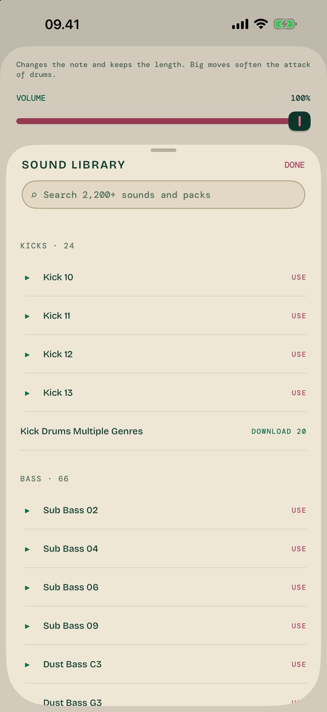
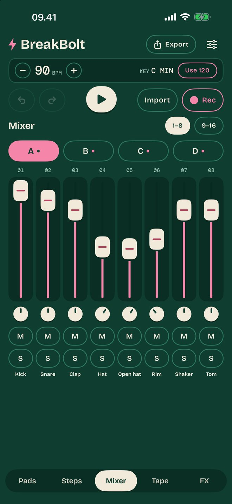
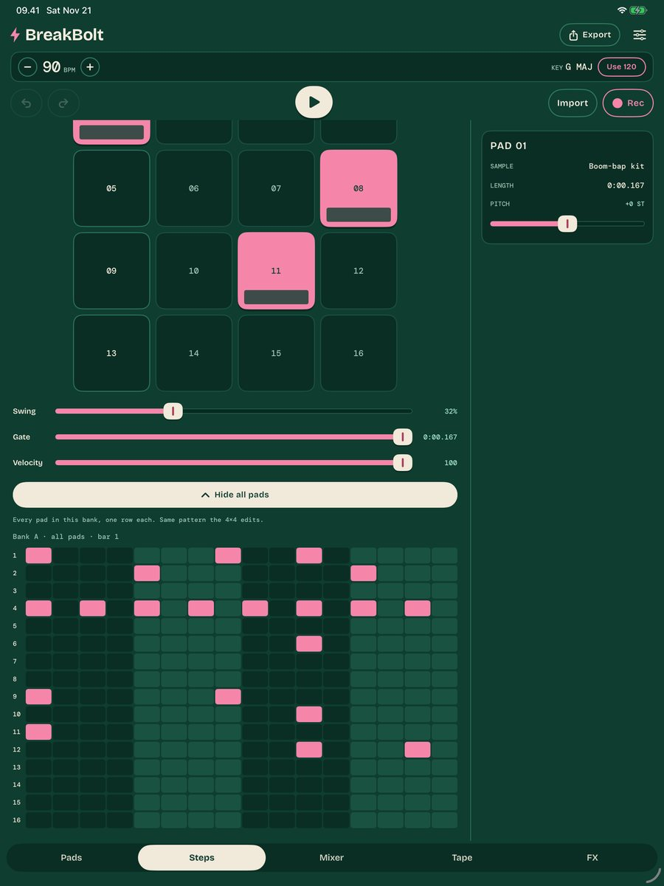
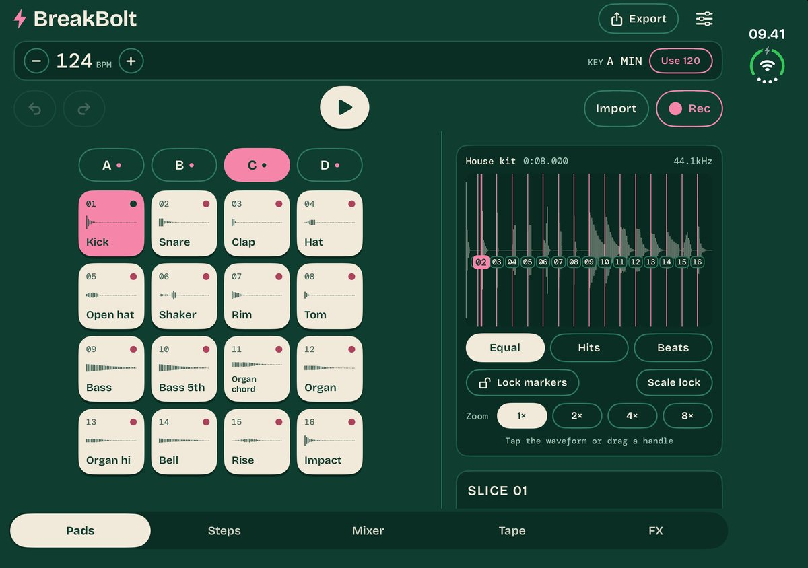

BREAKBOLT · GUIDE
From one sound
to a finished beat.
Every feature, in the order you make a beat: play the kits, load a sound, chop it, shape the pads, build a pattern, mix it, put it on tape, export it. Along the way, why each part works the way it does.
01FIND YOUR WAY AROUND
Five pages and one transport row
BreakBolt opens with a kit in every bank, so there's something to play straight away. Five pages sit along the bottom:
- Pads: the source sound, how it's cut up, and the 16 pads of the current bank. Tapping a pad plays it and selects it.
- Steps: the selected pad's pattern. All pads opens every pad's row in one grid.
- Mixer: volume, pan, mute and solo for each pad.
- Tape: a recording of everything you hear, to loop, slow down, or chop back onto the pads.
- FX: effects on the whole beat. A panel over the page on a phone, a sidebar on iPad.
Undo, Redo, Play, Import and Rec sit in one row on every page. The screen above it shows what's loaded, the tempo and the key. Export, top right, is the way out. There are 4 banks (A–D) of 16 pads, 64 pads in all.
The first flip and tips
The first launch opens FIRST FLIP IN 60 SECONDS, six steps from a sample to an exported loop. Each card points at its control and sits on the other half of the screen, so it never covers it, and a step completes when you do it. SKIP closes it; Settings → SHOW FIRST FLIP brings it back.
After that, a one-line TIP appears the first time you use a control. GOT IT dismisses it for good. Settings → TIPS turns them off, or shows them all again.

02THE FOUR KITS
One style in each bank
A new project starts with a kit in every bank. Each is one style, in one key, with its own instrument, so the bass and the melody fit together.
The layout is the same in every bank, so your thumbs learn it once:
- Pads 1–4: kick, snare, clap, closed hat. A beat from the top row alone.
- Pads 5–8: open hat, two percussion sounds, tom.
- Pads 9–11: bass, bass on the fifth, a chord.
- Pads 12–16: a note, a higher note, a lead sound, a rise and an impact.
Each pad shows its name (Kick, Gtr chord, Horns) until you move a cut or change the chop, because then the slices no longer hold those sounds. The drums are recordings from the Sound Library; the bass, the instruments, the rise and the impact are made in BreakBolt and are in the library too, named by kit: Dust is boom-bap, Wool lo-fi, Floor house, Skip garage.
03LOAD A SOUND
Six ways onto a pad
The first two fill the whole bank. The rest touch one pad.
Whole bank
Rec
Records the mic into the current bank and chops it across all 16 pads. Tap Stop to finish. A timer shows how long the take has run.
Whole bank
Import
Any audio file from Files, chopped the same way.
Empty pad
Pick from the library
Tap an empty pad to browse the Sound Library for it.
Empty pad
Record onto one pad
Long-press an empty pad to record straight onto it.
Loaded pad
Replace what's there
Long-press a pad, then RECORD OVER THIS PAD or CHOOSE FROM LIBRARY.
Loaded pad
Resample your mix
RESAMPLE MIX TO THIS PAD records the whole pattern onto the pad. See Resample.
- Rec and Import replace the bank's chopped pads. Pads you recorded onto or filled from the library are kept.
- A sample can be up to three minutes long (two on iPhones with less memory). A longer file opens a picker: drag the window over the part you want, tap Listen, then Use this part. A recording stops by itself at the limit. A sound recorded onto one pad can be up to a minute.
- With the click on (Steps → Click), recording onto a pad counts in one bar and starts on the downbeat. The bank's Rec starts at once.
- Recorded and imported audio is copied into the app, so deleting the original from Files later can't break your project.
Key and tempo, found for you
After a sound loads into a bank, BreakBolt works out its key and tempo in the background. The key shows on the screen beside the tempo. Use 120 (or whatever tempo it found) sets the sequencer to match in one tap. Scale lock, in the chop tools, limits pad pitch to steps of that key's scale; see how Pitch works.
04BROWSE THE LIBRARY
2,267 sounds, all included
56 sounds are built into the app and work offline, among them the kits' bass, instruments, rises and impacts. The rest come in 72 packs you download one at a time from Apple's servers. Open the library by tapping an empty pad, with CHOOSE FROM LIBRARY on a loaded one, or from Settings → SOUND PACKS → MANAGE.
- One pack at a time. Downloading Cowbell Kit doesn't pull in the other percussion packs, and a download can be cancelled from its row.
- Search every pack, downloaded or not. ▶ previews a sound; Use puts it on the pad and names the pad after it.
- REMOVE DOWNLOAD frees the space. Browsing back downloads it again.
- Every pack is included in the price, including packs added later. No in-app purchases.

05CHOP IT
How a sound becomes sixteen pads
On Pads, the screen shows the source. CHOP opens the tools and three ways to divide it.
Predictable
Equal
Sixteen slices of the same length. Ignores the music entirely.
Drums
Hits
Each slice starts on a detected hit, so every pad starts on a sound. Falls back to Equal if it finds too few.
Loops
Beats
Slices land on sixteenth notes at the detected tempo. Falls back to Equal with no tempo.
Move the cuts by hand
- Drag a numbered handle to move that cut. Cuts can't cross each other, and 01 stays at the start.
- Tap the waveform to move the nearest cut there.
- Lock markers makes taps select only, so a stray touch moves nothing. Handles still drag.
- Zoom 2×, 4× or 8×, then drag the waveform to scroll along it.
- Changing the chop mode replaces hand-placed cuts. Either way, Undo brings them back.
The waveform shows what each pad really plays: a pad's trimmed-off parts are faded, and a pad that holds a recording or a library sound has its whole slice faded.
Why moving a cut changes two pads
A cut is the end of one slice and the start of the next, so moving it lengthens one pad and shortens its neighbour. To shorten one pad and leave the rest alone, use TRIM in its settings instead.
06SHAPE EACH PAD
Settings for every pad
Tap a pad to play and select it. Pads don't cut each other off: two at once layer, and hitting one again restarts it. Long-press opens its settings.

How Pitch works
Pitch moves a pad in whole semitones, from −12 (an octave down) to +12 (an octave up); there's no fine-tuning in between. It belongs to the pad, so it applies everywhere the pad plays: a tap, the sequencer, a resample, an export, the tape. Clearing the bank or loading a new sample puts every pad back to 0.
Scale lock (in the chop tools on Pads) is on until you turn it off. While it's on and the bank has a detected key, the slider only stops on steps that land on a note of that key's scale, counted from its root. Up and down differ, because the scale isn't the same shape both ways: in C minor, 2 down from C is Bb, in the key, while 3 down is A, which isn't. The pad sheet shows LOCKED TO C MIN (or the bank's key) while it applies.
- Exact on a pad that plays the key's root. In the Boom-bap kit (C minor) the Bass pad is a C, so every allowed step lands on a note of C minor.
- A guide on every other pad. Steps are counted from the key's root, not the pad's own note. The Bass 5th pad is a G: +2 is allowed and gives an A, which isn't in C minor. Trust your ears, or count from the pad's note.
- It uses the bank's key. A pad holding a library sound or a recording in another key is still locked to the key of the bank's sample.
- No key, no lock. Drums and noise have no key, so every semitone is allowed and the sheet shows no lock.
- It never changes what you set. Turning it on or off leaves existing pitches alone; it applies to the next move.
How Pitch and Stretch sound
Pitch and Stretch work separately: Pitch moves the note and keeps the length, Stretch changes the length and keeps the note. To do that, BreakBolt rebuilds the sound from many short overlapping pieces. Small moves are clean. Big moves, especially on drums, soften the attack and add a slightly smeared, hollow colour. That is how the two controls work, not an added effect.
An old hardware sampler works differently: pitching up plays the sample faster, so it gets shorter too. The tape works that way: ½× and 2× on the Tape page change speed and pitch together.
Trim: shorten one pad, leave the rest
Trim shows the pad's own sound up close, so even a short hit fills the strip. Drag sideways to move S (start) or E (end); a drag takes whichever handle is nearer. The faded parts don't play, and each cut gets a few milliseconds of fade so it never clicks. PLAY auditions the pad, RESET restores the full length. Only this pad changes; the cuts on the source stay where they are. A new sound on the pad resets the trim.
07BUILD A PATTERN
Up to four bars, 16 or 32 steps a bar
Select a pad, then open Steps. Step 1 is top-left, reading across, so each row is a beat. Tap a cell to turn it on; the bar inside a lit cell is its velocity. The playhead outlines the step that's sounding.

Groove
Why it holds time
Every step is scheduled on the audio clock, not the screen, so the beat stays steady while you scroll, open a panel, switch apps or lock the phone.
08MIX IT
A fader for every pad
Mixer shows eight pads at a time, 1–8 and 9–16, because sixteen across a phone makes the buttons too small. Each loaded pad has a fader, a pan knob, M and S. The fader and knob are the same volume and pan as the pad's settings.
- M (mute) silences a pad and leaves its steps and fader alone. Mute is saved with the project and can be undone.
- S (solo) silences every pad that isn't soloed, in all four banks. Solo is for listening: it isn't saved and clears when a project opens, so a beat never comes back muted by a solo you forgot.
- While a solo is on, Clear solo appears, and a dot on the Mixer tab shows it from other pages.
- A silenced pad is left out of exports and the tape. What you hear is what you get.

09PLAY IT ONTO TAPE
Record, loop, slow down, chop again
The Tape records everything that comes out: the pattern, the pads you play, the mixer and the effects. One take holds up to five minutes.
- Record starts a take. While it runs, Export becomes a stop button with the time, on every page.
- Overdub plays the tape from the top and records a new layer over it. Undo brings back the take before.
- ½×, 1× and 2× change the speed and pitch together, like a real tape. Brake slows it to a stop, the pitch falling. Hold Stutter to repeat a short slice.
- Loop repeats the stretch between In and Out. The handles settle on beats, and a ruler marks bars and beats. All resets them to the whole take.
- Drag the reel to move the playhead, choose 1, 2, 4 or 8 bars, and Chop to pads loads that stretch into the current bank.
- The share button sends the tape as a WAV.

10ADD EFFECTS
One chain for the whole beat
FX works on all 64 pads mixed together, not on one pad. The order is distortion → crush → filter → delay → reverb → compressor, with a limiter at the end so sixteen pads at once can't clip.
Every move is undoable, one drag at a time. On a phone the panel slides over the page so the pads stay playable; on iPad it's a sidebar.

11RESAMPLE & GO AGAIN
Turn the whole loop into one sound
Long-press a pad → RESAMPLE MIX TO THIS PAD. BreakBolt plays the whole pattern, records everything (all four banks, effects included, and any pads you tap) and puts it on that pad. Now the loop is one sound you can trim, pitch, reverse and sequence again.
It's disabled while the pattern is empty, since there would be nothing to record. A resampled pad is as long as the pattern, so raise Gate if it cuts off when the sequencer plays it.
Why this matters
Resampling is how a beat gets denser than sixteen pads can hold. It's the move the instrument is built around.
12GET IT OUT
Three ways out
For a DAW
Export loop
The whole pattern as a WAV, starting on the downbeat and cut to the exact length, so it loops cleanly anywhere.
For short video
Make video
A vertical MP4 of the exported loop, ready to post.
Each opens the iOS share sheet: AirDrop, Files, Messages, or another app. Files are named with what they are, the tempo and the time. They're WAV, not Apple's CAF, so they open on Windows, Android and in every DAW.
13PROJECTS, UNDO & SAFETY
Saved as you go
14SETTINGS
The icon, top right
Haptics follow your iPhone's system haptics setting.
15IPAD & IPHONE DUO
The page, plus an inspector beside it
With room to spare, the page fills the main column and an inspector sits beside it: the selected slice on Pads (start, end, length, SNAP ZERO-X and gain) or the selected pad elsewhere. FX opens as a further sidebar. On iPad, All pads shows the whole pattern at once.
iPhone Duo, open, gets the same two columns: all 16 pads on the left, the chop tools beside them, and the step grid and mixer sized so everything fits without scrolling. Closed, the outer screen uses the phone layout, with the pads sized so all four rows fit.
On a narrow iPad (a mini in portrait, or a narrow Split View) there isn't room for the inspector, so you get the phone layout. iPad works in all four orientations.



16TROUBLESHOOTING